AI駆動によるInstagram運用の仕組み化と「保存される」リール量産フロー
AIを"右腕"に変え、作業時間を1/5にする魔法の一気通貫フロー — Jun 2026
気合いと根性の運用は今日で終わり。AIを「右腕」にして、成果を最大化しながら作業時間を1/5にする魔法を学びましょう。
【お猿式】インスタ×AIの全体像：マーケティングをAIで仕組み化する考え方
【たに式】Geminiリール台本プロンプト：ノウハウを込めたプロンプトで台本を量産する方法
【長瀬式】保存数ハブ戦略：アルゴリズムが評価する「保存」をコンテンツに組み込む方法
💡 今回の実践ワーク：AIツールチェーン（ChatGPT→Sora 2→Fish Audio→Vrew）で動画制作を爆速化する実践や、Padletを活用した台本作成＆シェアワークを行います。
Instagramは、リールによる「新規認知」、ストーリーズによる「教育・関係構築」、プロフィール・ハイライトによる「導線設計」、そしてDMによる「濃いコミュニケーションと販売」まで、一連のマーケティングプロセスがアプリ単体で完結する極めて強力なツールです。
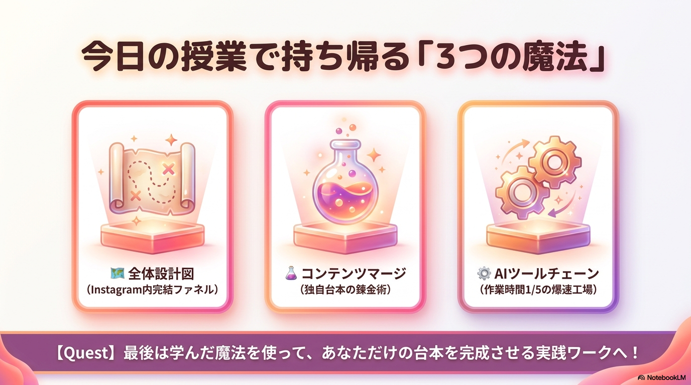
個人や少人数での運用で多くの投稿を継続するためには、AIを活用した仕組み化が不可欠です。市場でバズっている競合のヒットコンテンツの構造（YouTube動画の文字起こし等）と、自分の強みや一次情報をAI（GeminiやNotebookLM）上で掛け合わせる「コンテンツマージ」を行うことで、自分ならではのオリジナルな台本を大量に生成することができます。
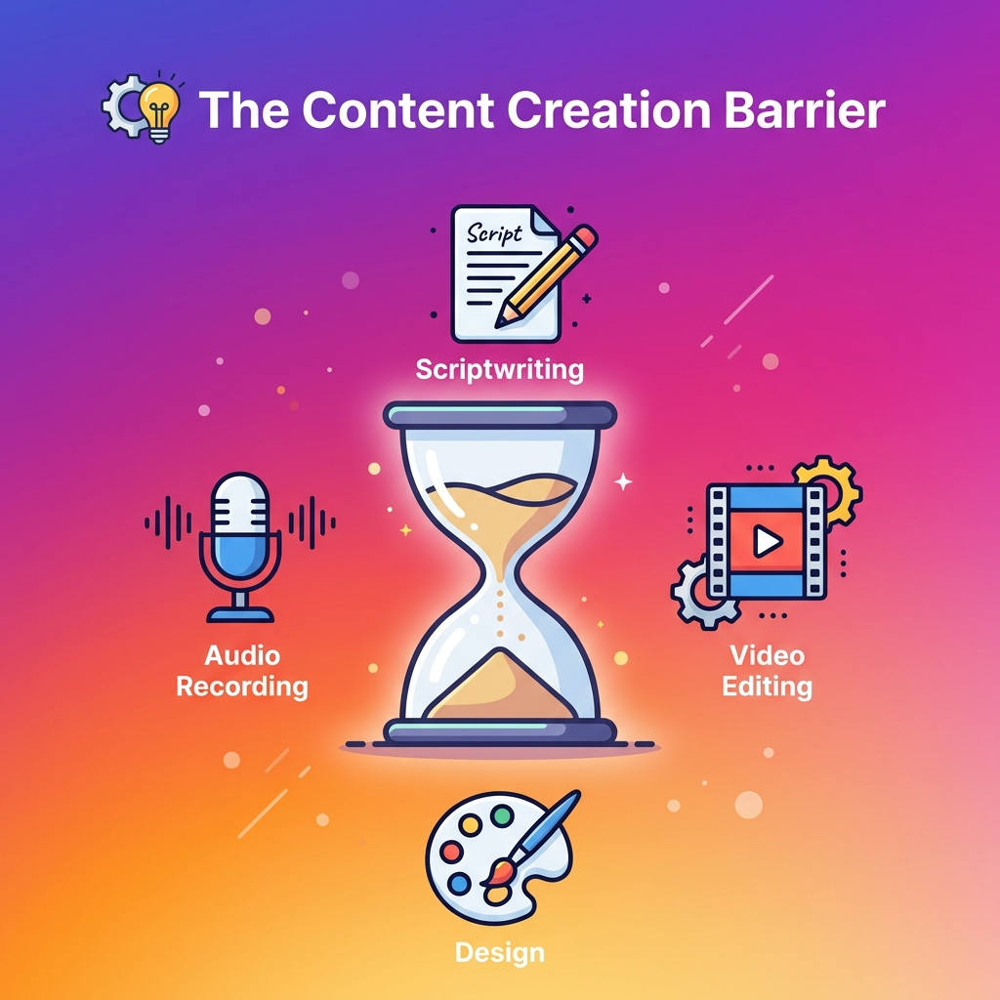
Instagramのあらゆる機能でAIを右腕として活用します。コンセプト設計における「市場・競合分析とポジショニング」、ストーリーズの「質問スタンプなどの企画案・投稿文生成」、インスタライブの「事前Q&A予測と回答案のシミュレーション」など、各フェーズにAIを配置して連動させることで、運用全体の質とスピードを引き上げます。
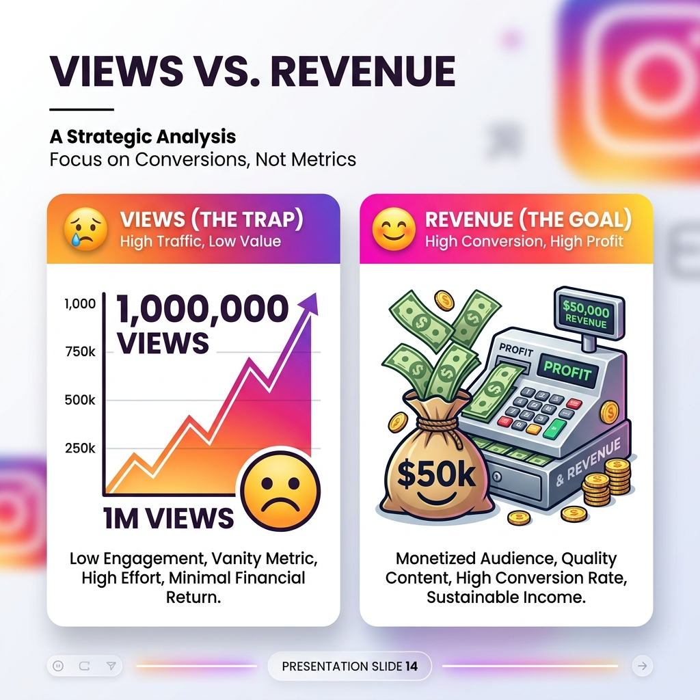
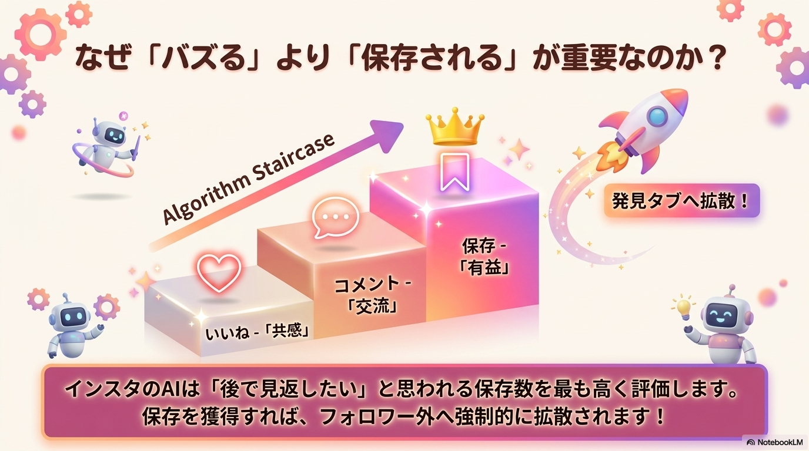
AIに実用レベルの台本を出力させるためには、インスタで伸びるための具体的なノウハウをプロンプト内に細かく明文化しておく必要があります。ペルソナ（ロール定義）、前フリの構成、冒頭フックにかけるべき秒数など、明確なルールをあらかじめAIに定義（入力）しておくことが重要です。
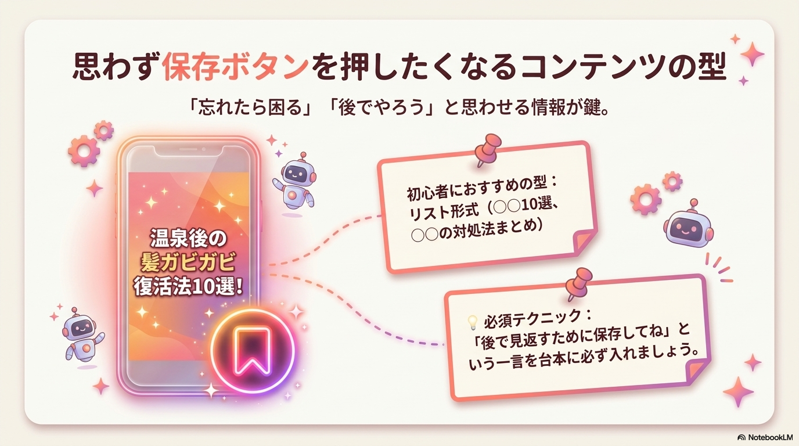
プロンプトの骨格を定義したら、毎回入力すべき「変数」を渡します。「テーマ名」「目的（認知・教育・集客）」「ターゲット像の定義」「具体的な悩み（3つ）」「ターゲットが抱える将来の不安」などを個別に入力することで、ペルソナに深く刺さるターゲット特化の台本を作成させることができます。
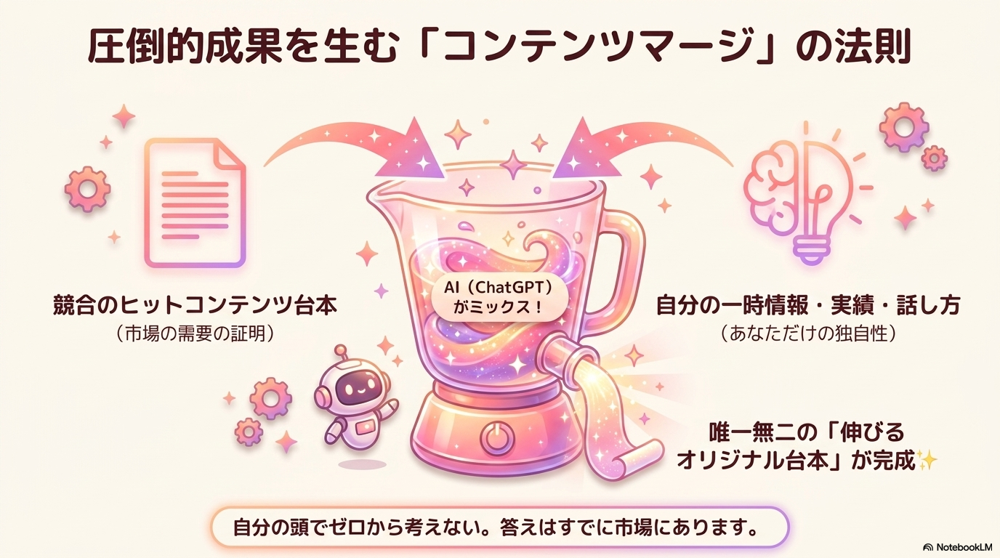
テーマを自分の頭だけで考えるのはやめましょう。現在Instagram上で実際に伸びている、市場で旬のテーマ（例：健康・ダイエット分野における「バナナ論争」や「キムチ論争」など）をリアルタイムにリサーチして拾い上げ、それをプロンプトの変数に落とし込むことこそがバズを再現する最大の秘訣です。
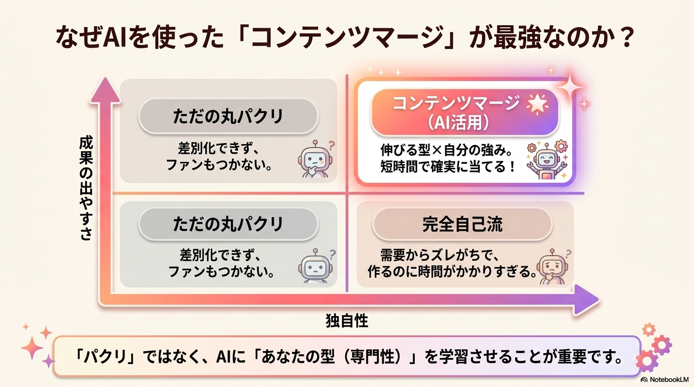
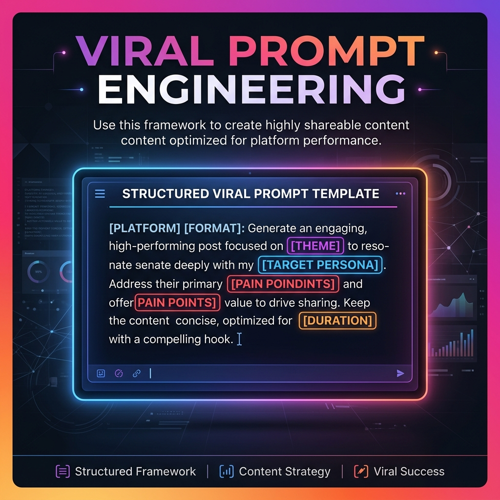
InstagramのAIアルゴリズムは、ユーザーエンゲージメントの中で「コメント」や「いいね」よりも「保存数」を最も高く評価します。保存数が多い投稿は「有益なコンテンツ」と判定され、発見タブやリールタブに優先的かつ強制的に表示されるようになります。すなわち保存数は、新規フォロワーを呼び込むための「客寄せパンダ」であり、拡散のハブとなる最重要指標です。
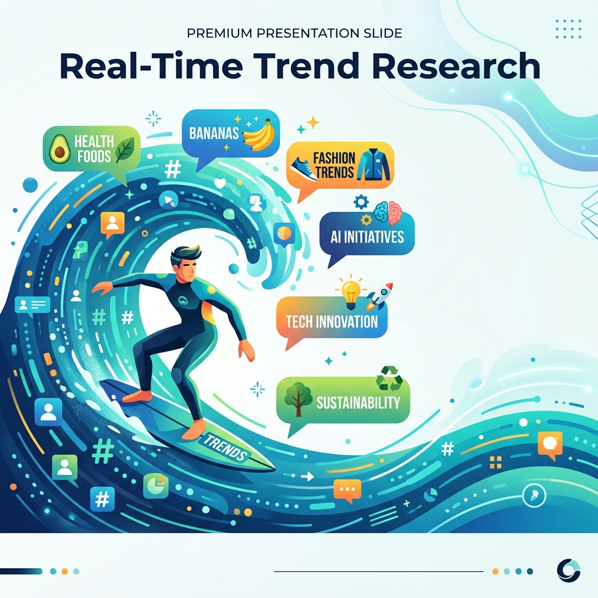
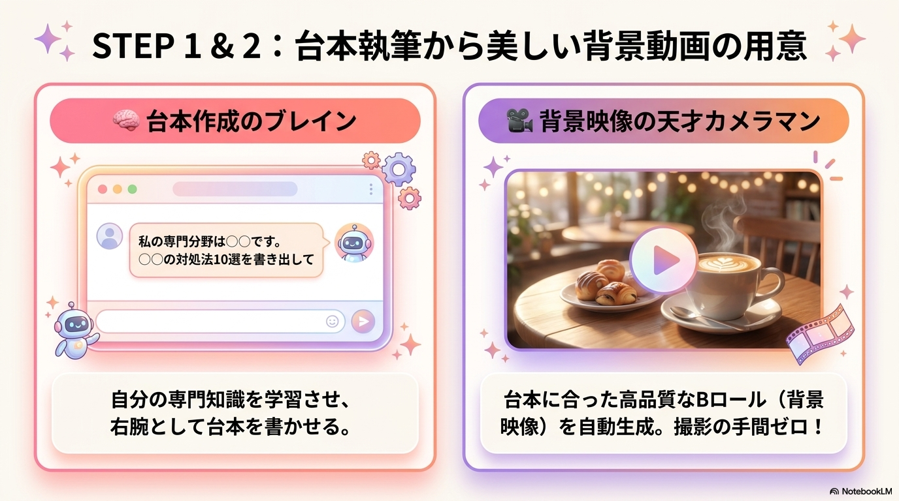
保存数を増やすには、「後で見返したくなる」構成を意図的に仕込む必要があります。たとえば、「保存推奨！おすすめの〇〇 10選」のようなリスト形式、情報を整理した「美忘録まとめ」、行動を促す「1週間ルーティーン」などをコンテンツに組み込みます。また、キャプションやリールの最後で直接「忘れないように保存してね」と呼びかけるアクションも非常に効果的です。
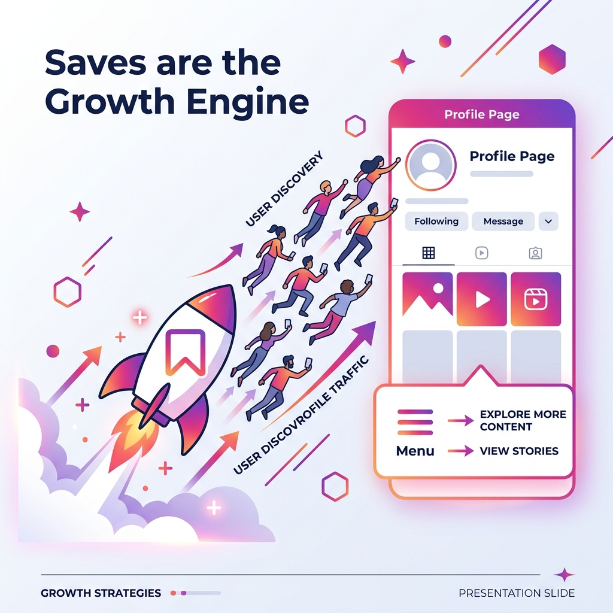
保存数が伸びることで、アルゴリズムにより発見タブに露出され、新規ユーザーがあなたのプロフィールを訪問します。プロフィールが整っていればフォローに繋がり、その後のストーリーズ発信を通じて関係が構築され、最終的にDMやハイライト経由での購買（マネタイズ）に至るという、自動化されたファン化・販売ループが作られます。
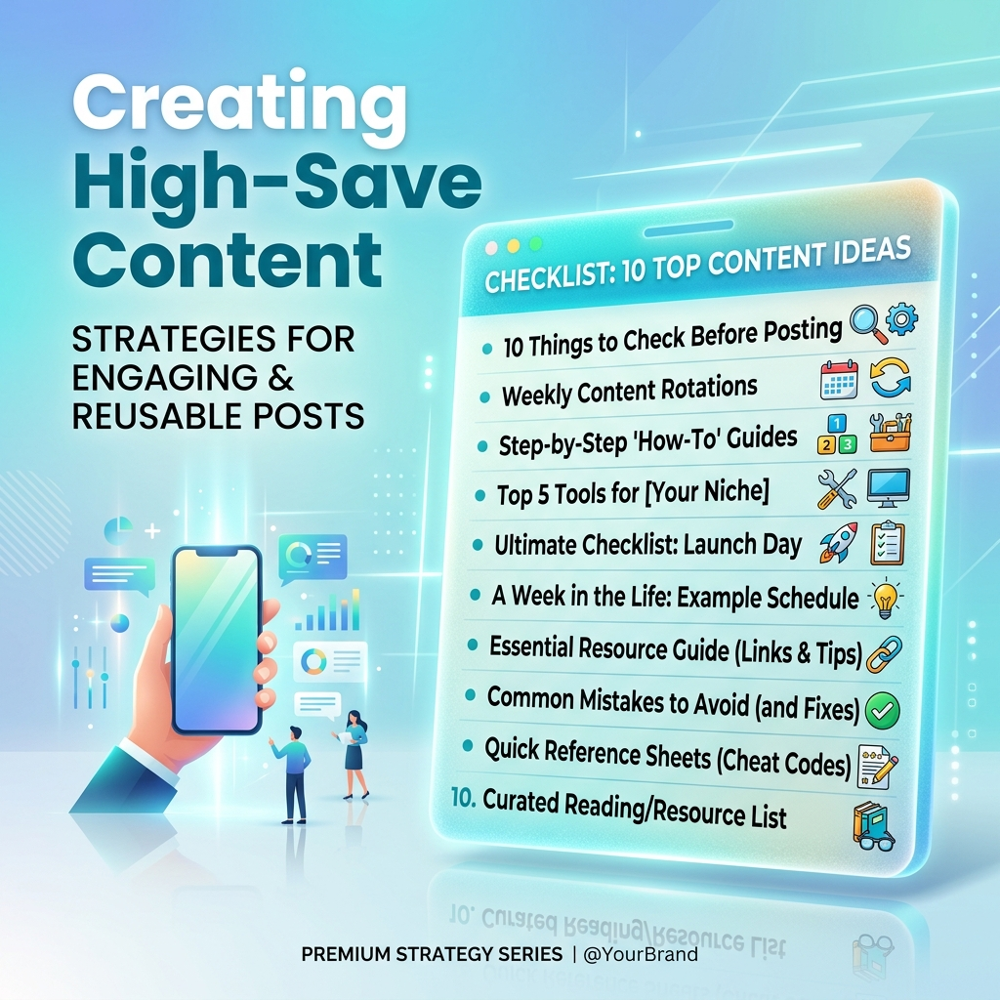
リール動画の制作時間を劇的に短縮する、複数のAIツールを繋いだ「AIツールチェーン」の活用方法です。
自分の専門分野やノウハウを事前にChatGPTに学習させ、ターゲットの悩みに対する「10個の対処法を1分間で分かりやすく伝える台本」を出力させます。
出力された台本のシーンや雰囲気にマッチした背景用のイメージ動画（B-Roll動画）を、テキストプロンプト等から自動生成します。
自分の声を十数秒学習させて作った音声クローンを利用し、台本テキストから極めて自然な日本語ナレーション（音声ファイル）を合成します。
生成した音声と映像をインポートし、作成しておいた台本テキストを流し込むことで、AIが音声のタイミングに合わせて爆速でテロップを自動配置して動画を完成させます。
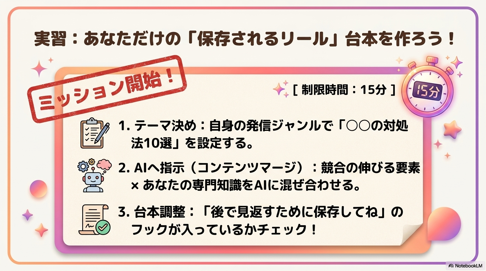
💡 まずはVrewだけでも試してみよう
Sora 2やFish Audioなどの複数ツールを連携させるツールチェーンは上級者向けです。まずは「Vrew」を導入し、「自分でスマホ撮影した動画」をインポートして自動でテロップを生成させるだけでも、大幅な制作時間のカット（時短）が可能です。慣れてきたら徐々に前後のステップをAI化して、チェーンを伸ばしていきましょう。
目的： 「推し」を発信するワークフローに沿って今日の学び（AI駆動Instagram運用の仕組み化）を自分のアカウント課題に活かし、共有ボードに提出する
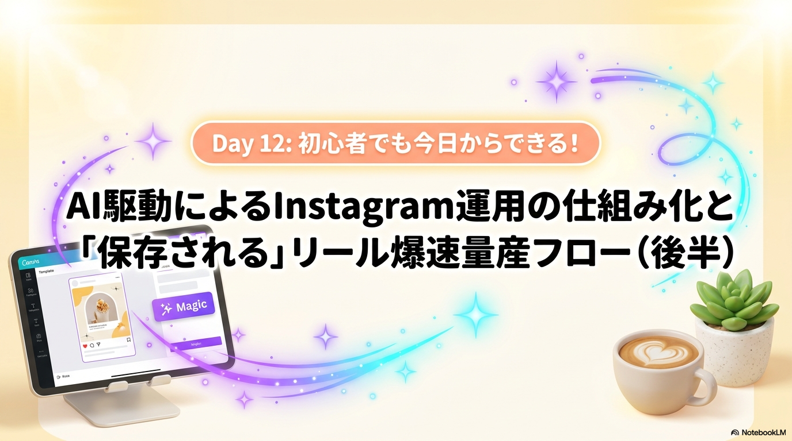
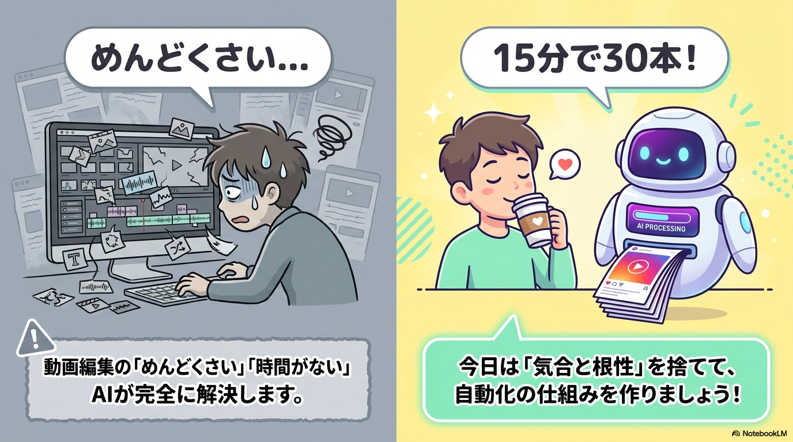
雑学ショート動画の制作で成果を出すためには、センスや気合に頼るのではなく、プロセスを仕組み化して「工程」として淡々と回すことが重要です。ネタ出し、画像生成、音声合成、編集という4つのステップを固定の順番とやり方で回すことで、1本20分での爆速制作と、月30万円を狙う再現性の高い量産フローを構築できます。
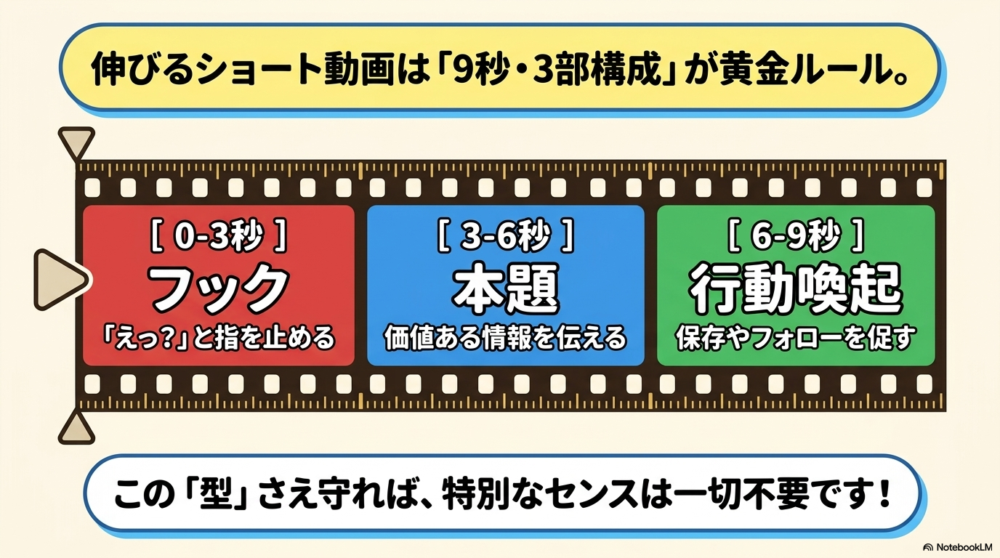
量産を実現するための具体的な4ステップの構成です。
ChatGPTに「雑学プロンプト」を入力し、特定のジャンル（動物・恋愛・心理など）からショート動画向きのネタを5個ずつ出力させます。出力されたネタは必ず数秒の簡易検索で裏取りを行います。
文字を含めず「ビジュアルだけ」を1ネタにつき1枚ずつ画像生成します（文字崩れや世界観のばらつきを防ぐため）。ショート動画ではリアルな写真よりもポップなイラスト調が親しみやすく、離読されにくいです。
聞き慣れた安心感のある声を固定して使用します。音声に違和感があるだけで視聴者は離脱するため、個性を出すより聞き取りやすさを最優先にし、読点を多くして自然なスピードに調整します。
スマホ動画の基本サイズ（9:16、1080×1920）で編集します。音声を基準線にして画像を切り替え、1行10文字以内の見やすいテロップと音量を極めて小さくしたBGMを重ねて動画を仕上げます。
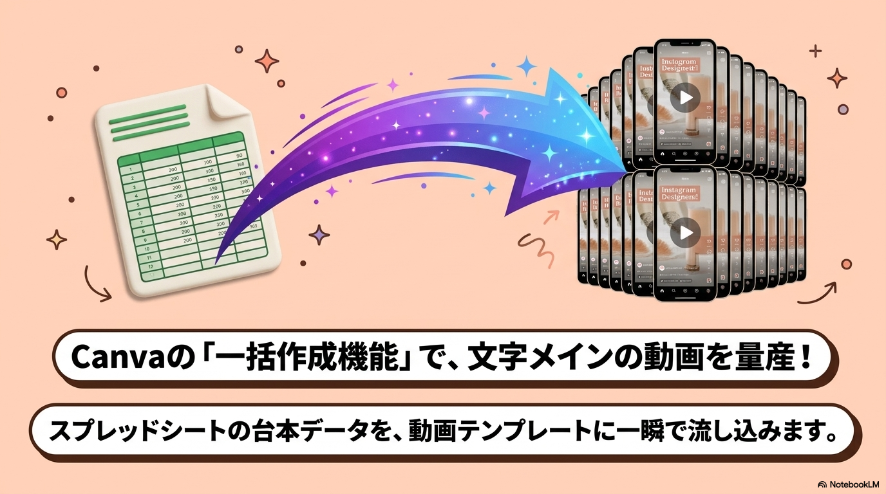
動画が完成したら、YouTubeショート、TikTok、Instagramリールの3つのプラットフォームすべてに横展開（同一編集・構成でそのまま投稿）して露出チャンスを最大化します。まずは2ジャンル（各10本・計20本）を同じ構成で投稿し、どのジャンルに反応が出るか傾向を掴む検証期間を設けます。また、無風の検証期間を耐えるために、比較的早く収益化しやすい別の「平行動線」を持っておくことも挫折防止に極めて有効です。
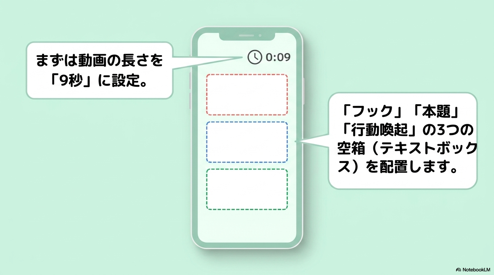
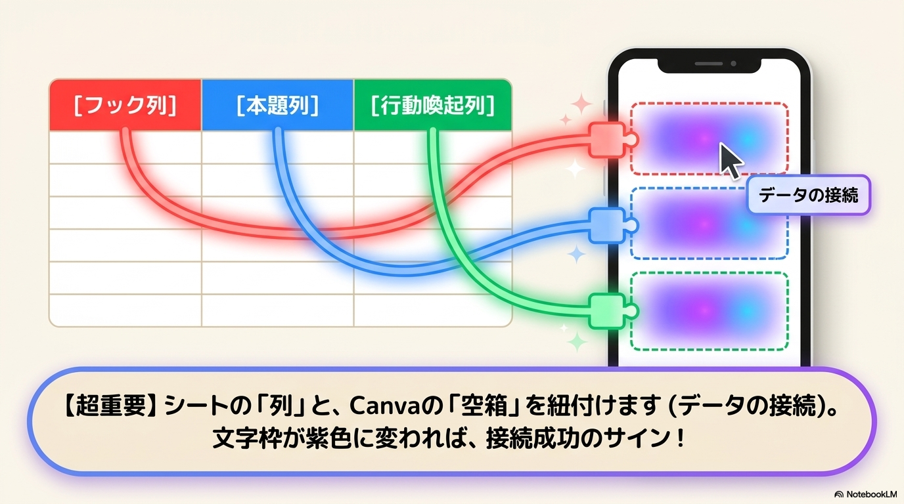
複雑な外部ツールを使わず、CanvaのAI機能と一括作成機能（Canva Pro）のみを用いて、1か月分（30本）の動画を15分で一括生成する手順です。
Canva内の「マジック作文」機能にプロンプトを入力し、「フック」「本題」「行動喚起」の3列形式で30個の台本を表（CSV）形式で瞬時に自動生成させます。
スマホ動画の9:16テンプレートを選択。複製した3つのテキストボックスを配置し、タイムラインでそれぞれ表示時間「フック（0〜3秒）」「本題（3〜6秒）」「行動喚起（6〜9秒）」とずらして配置します（計9秒の尺）。
Canvaの一括作成機能を開き、選択した台本データを読み込みます。テンプレート上の各テキストボックスを台本の該当するデータ列（フック・本題・行動喚起）に右クリックで「データの接続」を行い、生成ボタンを押すだけで30本が一括出力されます。
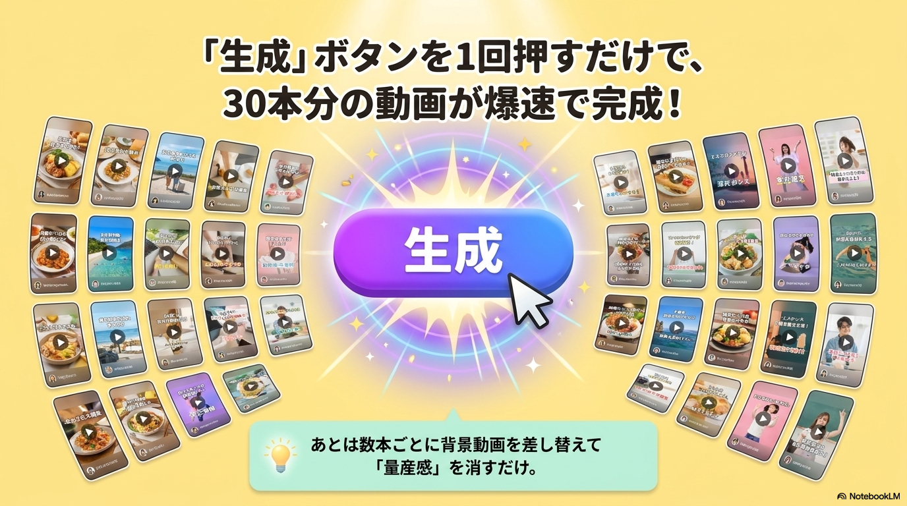
自動生成された動画はすべて背景が同じになります。量産感を消してプロ風に仕上げるため、3〜5本に1本程度の割合で「背景動画の差し替え」（素材から背景にドラッグ＆ドロップして背景差し替えを選択）を行い、改行位置が不自然に切れているテキストボックスをダブルクリックして手動で改行を整えましょう。この僅かなひと手間で動画の品質が格段に向上します。
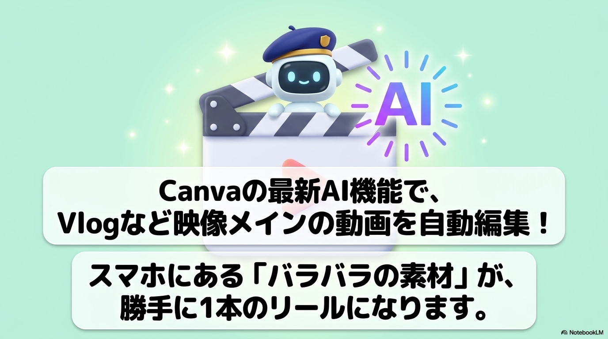
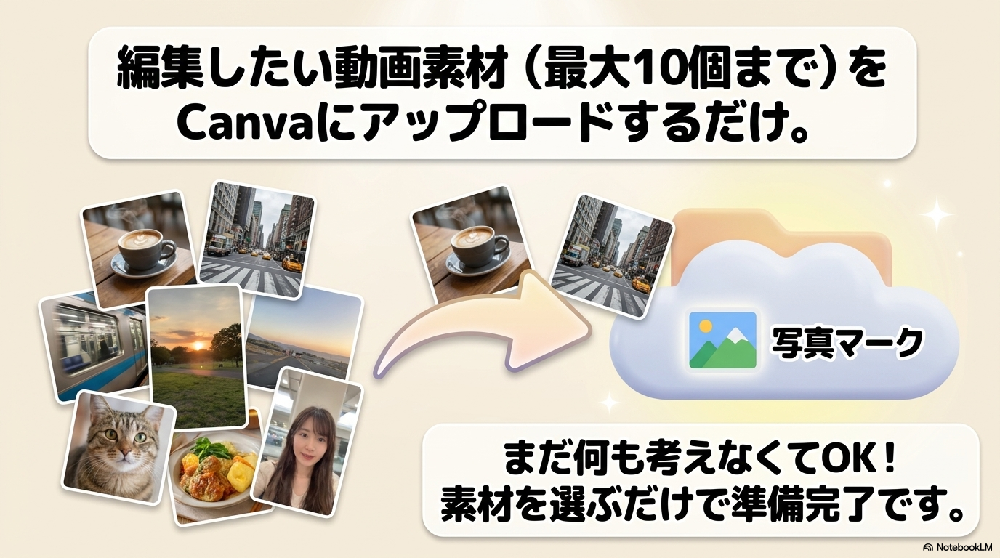
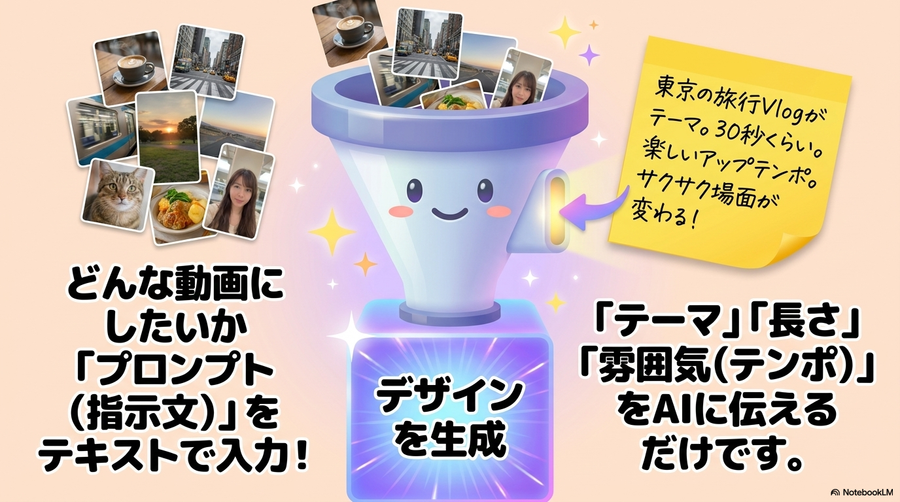
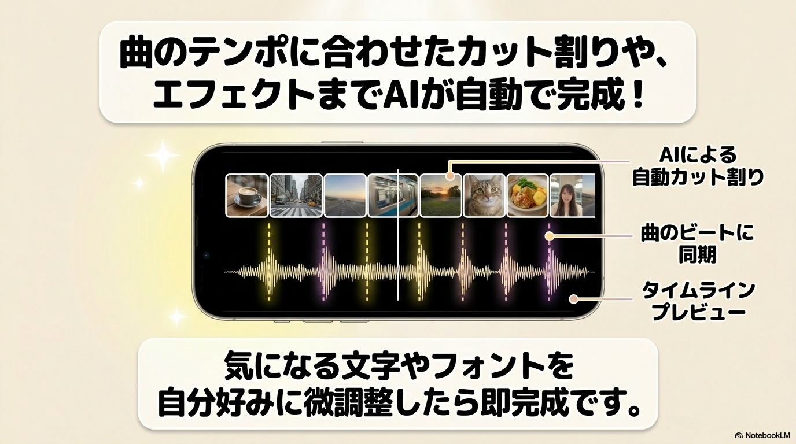
スマートフォンのカメラロールなどに撮りためた日常の動画や写真素材をアップロードするだけで、CanvaのAIが自動的に見栄えの良い場面カットを繋ぎ、音楽やエフェクトをあてて完成させてくれる最新のAI自動編集機能です。自分でタイムラインを切り刻む面倒な編集作業から完全に解放されます。
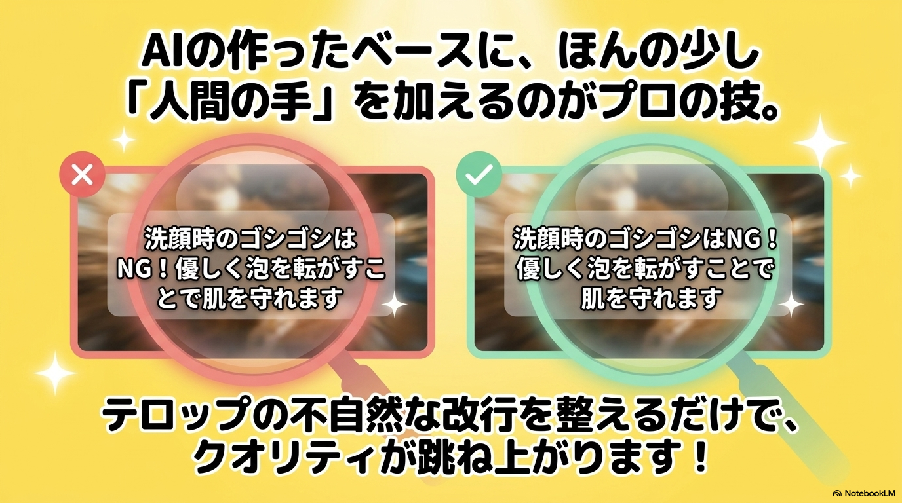
アップロードから完成までの4つの簡単な手順です。
Canvaホーム画面の「動画」から「スマホ動画」のキャンバス（9:16）を新規作成します。
左メニューの「デザイン」内にある写真マーク（またはカメラロール接続）から、リールに使いたい自前の動画や写真素材（最大10個）を複数選択してアップロードします。
入力欄に「どんな動画を作りたいか」の指示文（例：「東京旅行Vlog。30秒ぐらい。楽しい雰囲気。サクサク場面が変わる」）を入力します。
「デザインを生成」をクリックすると、AIが動画を解析・構成し、テンポに合わせたカット編集、BGM、エフェクト、テキスト（タイトル）がすべて配置された状態の動画を数秒〜数十秒で自動作成します。配置されたフォントやテキスト内容、音楽などは後から自由に変更・カスタマイズできます。
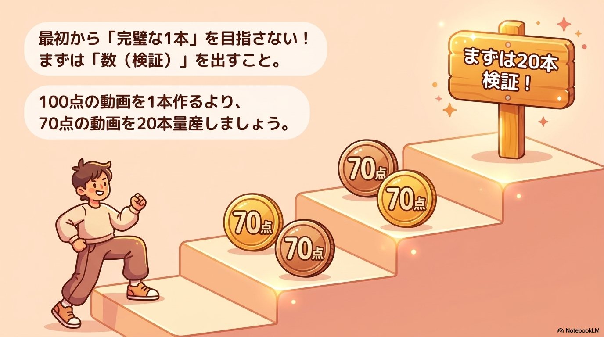
💡 無料プランは月5回まで。有料プランは制限なし
この非常に便利なAI自動動画編集機能は、無料プランのアカウントでも毎月5回までお試しで生成・利用可能です。より高い頻度で量産を行いたい場合は、回数制限が解除されるCanva Pro（有料プラン）へのアップグレードをおすすめします。
目的： 後半の講義内容（Canva一括作成・AI動画編集）を踏まえ、自分のアカウント課題をアップデートしてPadletシェアボードに提出する